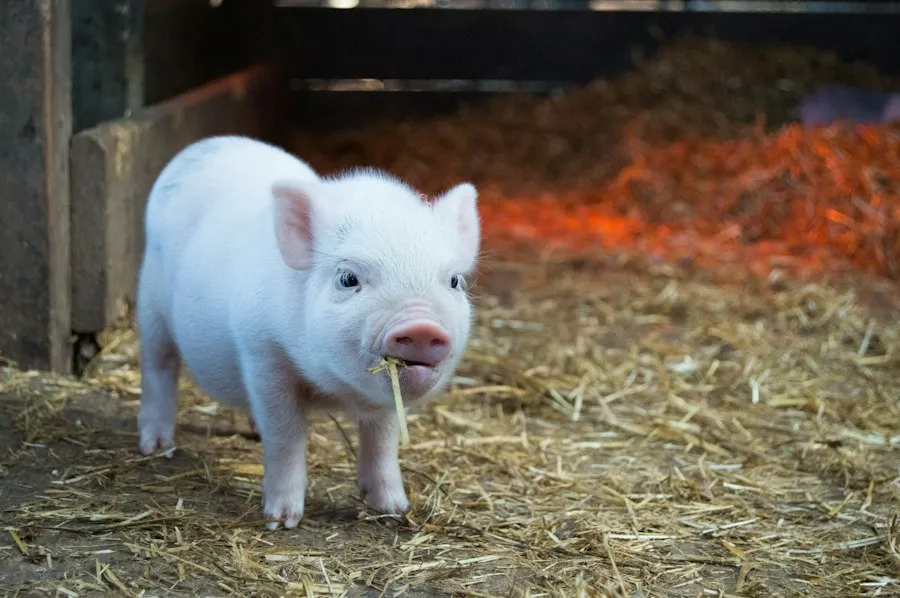
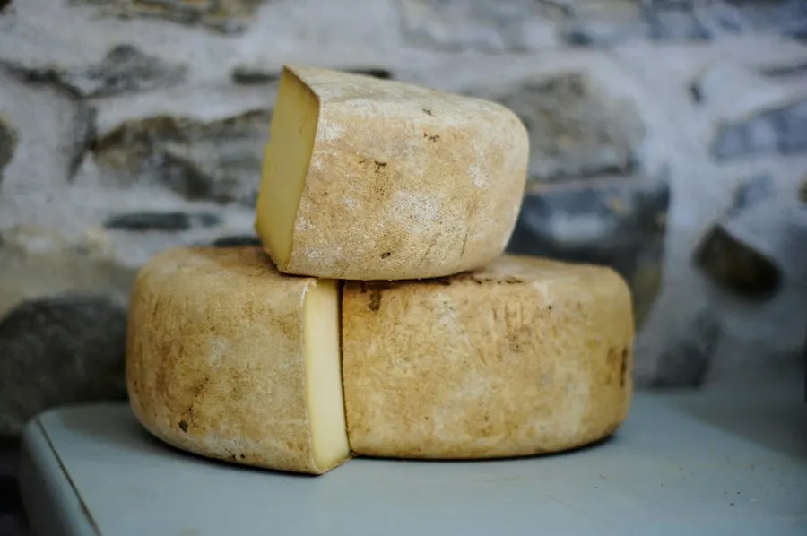

Ethical Livestock & Regenerative Dairy
Open-pasture rotational grazing, cruelty-free native cattle conservation, and zero routine antibiotics producing pristine certified A2 whole milk and artisan dairy batches.
Mimicking Natural Herd Movements On Living Pastures
Animals are fundamental to a healthy farm ecosystem. Instead of confined factory sheds, our indigenous Indian cattle (Gir, Kangayam, and Sahiwal breeds) roam open rolling paddocks sown with clover, alfalfa, and native herbal grasses.
By shifting the herd to fresh paddocks every 48 hours, cattle naturally aerate and fertilize the ground with microbial-rich manure, allowing previous plots 28 days of rapid photosynthetic recovery.
🌿 100% Grass-Fed
Zero corn, GMO soy, or synthetic growth hormones.
🐄 Indigenous Breeds
Naturally climate-resilient with pure A2 beta-casein genetics.

On-Site Veterinary Care & Preventative Phytotherapy
We firmly oppose preventative antibiotic use. Our full-time veterinary team employs ayurvedic herbal tonics, mineral lick blocks, and pasture rotation to bolster natural bovine immunity.
- ✔ Zero Hormone Injections: Strictly no rBGH or oxytocin ever administered.
- ✔ Calf-Mother Bond Preservation: Calves nurse naturally with mothers before any surplus milk is gathered.
- ✔ Daily Somatic Cell Testing: Ultra-low somatic cell counts ensuring maximum purity and shelf stability.
Artisan Handcrafted Farm Dairy Products
Small-batch cultured dairy prepared using traditional methods within 4 hours of morning milking.

Artisan Farmstead Cheeses
Naturally aged cave cheeses made with vegetarian rennet and unpasteurized A2 whole milk.
Reserve Cheese WheelTraditional A2 Cultured Ghee
Slowly simmered over wood fires from curd-churned butter, rich in fat-soluble vitamins A, D, E, and K2.
Reserve Ghee BatchChilled Raw A2 Whole Milk
Filtered and immediately chilled to 4°C in solar coolers for wholesale dairy cooperatives and cafes.
Contract Milk RouteVerified Humane & Certified Sustainable
Certified Humane®
Uncompromising space allowances, natural bedding, and continuous pasture access.
100% A2 Genetics DNA Verified
Laboratory DNA ear-tag certification confirming pure A2/A2 beta-casein protein.
Zero Methane Offset Farm
Bio-gas digesters transform manure into renewable electricity and liquid bio-fertilizer.